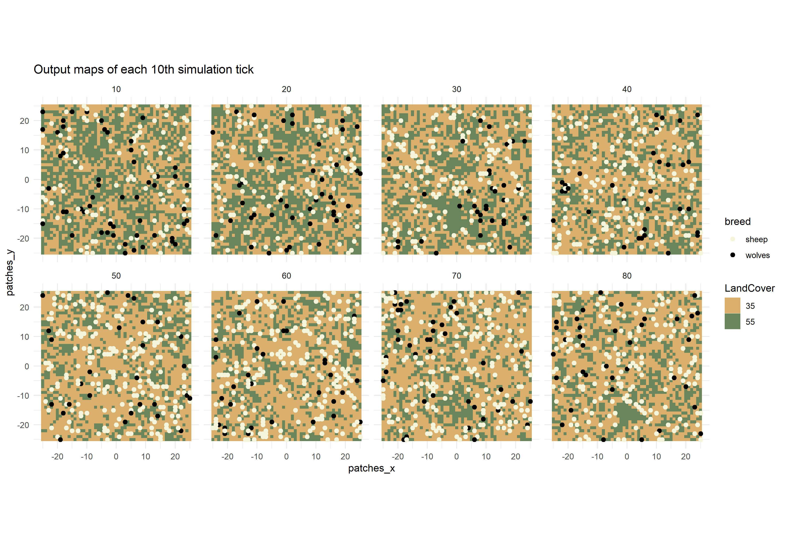

vignettes/articles/spatial-output.Rmd
spatial-output.Rmdnlrx is able to gather spatial output from your NetLogo simulations. The experiment class object provides slots for measuring turtles, patches and link variables:
list("turtles" = c("who", "pxcor", "pycor", "color"))c("pxcor", "pycor", "pcolor"))list("links" = c("[who] of end1", "[who] of end2")))Basically, you can enter any variable of your model that is listed in turtles-own, patches-own or links-own, however if you add variables that contain strings, these strings must not contain any whitespaces or the output data will not be parsed correctly.
If your model has agent variables that only exist for one specific
breed (breed-own), measuring those variables for all turtles would
result in a runtime error. Thus, different vectors of metrics can be
provided for each specific breed
(e.g. metrics.turtles = list("breed_A" = c("who", "pxcor", "pycor", "var_of_breed_A"), "breed_B" = c("who", "pxcor", "pycor", "var_of_breed_B"))).
This also works for links breeds.
If an experiment contains any agent metrics, the results of these metrics will be nested inside the output results tibble. In order to utilize these data, they need to be postprocessed. nlrx provides two types of postprocessing functions:
unnest_simoutput() - This function may be used to
unnest the data within the output results tibble. It reports a long
tibble containing all parameters, variables and agent metrics. This
format is easily subsettable and is suited to produce plots using the
ggplot package, or create animations with gganimate.nl_to_graph(), nl_to_raster(),
nl_to_points() - These functions create spatial objects
from the nested data within the output results tibble. Please note, that
these functions have requirements on measured spatial variables:
nl_to_graph() - Reports igraph objects and needs at
least turtle who numbers and who numbers of link ends
(metrics.turtles = list("turtles" = c("who")), metrics.links = list("links" = c("[who] of end1", "[who] of end2"))).
Additional turtle and link variables will be stored as properties of the
igraph nodes and vertices.nl_to_raster() - Reports raster objects and needs patch
coordinates and at least one patch variable
(metrics.patches = c("pxcor", "pycor", "pcolor")). If
several patch variables are provided, a raster stack is created with
rasters for each patch variable.nl_to_points() - Reports spatial point objects and
needs at least turtle coordinates, either pxcor/pycor or xcor/ycor
(metrics.turtles = list("turtles" = c("xcor", "ycor", "who", "color"))).
Additional turtle variables will be stored as properties of the spatial
points.We use the Wolf Sheep Model from the NetLogo models library to capture metrics of patches and turtles. We measure coordinates, who numbers and the breed of turtles, and coordinates of patches and the corresponding pcolor on each tick. We define our experiment accordingly and run the simulations:
library(nlrx)
library(ggplot2)
library(gganimate) # devtools::install_github('thomasp85/gganimate') - if you have troubles installing gganimate, you most likely also need to install gifski as system dependency
# Windows default NetLogo installation path (adjust to your needs!):
netlogopath <- file.path("C:/Program Files/NetLogo 6.0.3")
modelpath <- file.path(netlogopath, "app/models/Sample Models/Biology/Wolf Sheep Predation.nlogo")
outpath <- file.path("C:/out")
# Unix default NetLogo installation path (adjust to your needs!):
netlogopath <- file.path("/home/NetLogo 6.0.3")
modelpath <- file.path(netlogopath, "app/models/Sample Models/Biology/Wolf Sheep Predation.nlogo")
outpath <- file.path("/home/out")
# Define nl object
nl <- nl(nlversion = "6.0.3",
nlpath = netlogopath,
modelpath = modelpath,
jvmmem = 1024)
# Define experiment
nl@experiment <- experiment(expname = "nlrx_spatial",
outpath = outpath,
repetition = 1,
tickmetrics = "true",
idsetup = "setup",
idgo = "go",
runtime = 100,
metrics = c("count sheep","count wolves"),
metrics.turtles = list("turtles" = c("who", "pxcor", "pycor")),
metrics.patches = c("pxcor", "pycor", "pcolor"),
constants = list("model-version" = "\"sheep-wolves-grass\"",
'initial-number-sheep' = 100,
'initial-number-wolves' = 50,
"grass-regrowth-time" = 30,
"sheep-gain-from-food" = 4,
"wolf-gain-from-food" = 20,
"sheep-reproduce" = 4,
"wolf-reproduce" = 5,
"show-energy?" = "false")
)
# Attach simdesign simple using only constants
nl@simdesign <- simdesign_simple(nl=nl,
nseeds=1)
# Run simulations and store output in results
results <- run_nl_all(nl = nl)This experiment will run for 100 ticks (runtime) and collects all
metrics, metrics.turtles and metrics.patches on each tick (evalticks).
Thus, executing run_nl_all() will report a tibble
containing all metrics, metrics.turtles and metrics.patches. However,
because the spatial metrics contain more than one value, these datasets
are stored as lists inside the output tibble. These lists already
contain all measured agent metrics and can for example be used to
analyze distributions of these variables for specific agent groups.
unnest_simoutput()
We use the unnest_simoutput() function to create a large
tibble format which we can use for plotting. In order to use this
function, the simulation output need to be attached to the nl object
first (otherwise a warning will appear). The simdesign class within the
nl object provides a slot for attaching output results (simoutput). An
output results tibble can be attached to this slot by using the
simdesign setter function setsim(nl, "simoutput").
# Attach results to nl object:
setsim(nl, "simoutput") <- results
# Report spatial data:
results_unnest <- unnest_simoutput(nl)The spatial tibble output from unnest_simoutput() can
for example be used to plot maps for different ticks of the model
simulation. Here is an example to create a facet plot using spatial
simulation data of every 10th simulation tick:
# Split tibble into turtles and patches tibbles and select each 10th step:
results_unnest_turtles <- results_unnest %>%
dplyr::filter(agent=="turtles") %>%
dplyr::filter(`[step]` %in% seq(10,80,10))
results_unnest_patches <- results_unnest %>%
dplyr::filter(agent=="patches") %>%
dplyr::filter(`[step]` %in% seq(10,80,10))
# Create facet plot:
ggplot() +
facet_wrap(~`[step]`, ncol=4) +
coord_equal() +
geom_tile(data=results_unnest_patches, aes(x=pxcor, y=pycor, fill=factor(pcolor))) +
geom_point(data=results_unnest_turtles, aes(x = pxcor, y = pycor, color = breed), size=1) +
scale_fill_manual(breaks=c("35", "55"), values = c("35" = "#D9AF6B", "55" = "#68855C")) +
scale_color_manual(breaks=c("sheep", "wolves"), values = c("sheep" = "beige", "wolves" = "black")) +
guides(fill=guide_legend(title="LandCover")) +
theme_minimal() +
ggtitle("Output maps of each 10th simulation tick")
Using the gganimate package(https://github.com/thomasp85/gganimate), it is even
possible to generate animated plots from this spatial data tibble. Here
is an example for a plot that has been generated by running the above
experiment and postprocessing the data with
unnest_simoutput().
# Split tibble into turtles and patches tibbles:
results_unnest_turtles <- results_unnest %>%
dplyr::filter(agent == "turtles")
results_unnest_patches <- results_unnest %>%
dplyr::filter(agent == "patches")
# Create an animated plot, using the step column as animation variable
p1 <- ggplot() +
geom_tile(data=results_unnest_patches, aes(x=pxcor, y=pycor, fill=factor(pcolor))) +
geom_point(data=results_unnest_turtles, aes(x = pxcor, y = pycor, group=who, color = breed), size=2) +
scale_fill_manual(breaks=c("35", "55"), values = c("35" = "#D9AF6B", "55" = "#68855C")) +
scale_color_manual(breaks=c("sheep", "wolves"), values = c("sheep" = "beige", "wolves" = "black")) +
guides(fill=guide_legend(title="LandCover")) +
transition_time(`[step]`) +
coord_equal() +
labs(title = 'Step: {frame_time}') +
theme_void()
# Animate the plot and use 1 frame for each step of the model simulations
gganimate::animate(p1, nframes = length(unique(results_unnest_patches$`[step]`)), width=400, height=400, fps=4)
anim_save("wolfsheep_world.gif")nl_to_raster() and
nl_to_points()
A second option to postprocess spatial data is to convert patches data to raster objects and turtles data to spatial point objects. This can be handy if further spatial analyses are carried out, such as calculating landscape metrics (e.g. with R-package landscapemetrics). In this example, we use the nl object with attached simulation output of the previous example to generate raster and spatial point objects.
## Create raster and point objects from patches and turtles data:
library(raster)
library(sf)
nlraster <- nl_to_raster(nl)
nlpoints <- nl_to_points(nl, coords = "px")
## Plot raster and turtles of tick n:
n <- 1
plot(nlraster$spatial.raster[[n]], col=c("35" = "#D9AF6B", "55" = "#68855C"))
plot(nlpoints$spatial.turtles[[n]]["breed"], add=TRUE, pch=16, col=c("sheep" = "beige", "wolves" = "black"))We use the Giant Component model from the NetLogo models library to
capture metrics of turtles and links. The nl_to_graph()
function generates igraph objects from measured turtles and links data.
It produces an igraph object for each row of the simoutput results
tibble. Thus, it reports one igraph network for each combination of
random-seed, siminputrow and step.
In order to generate igraph objects some metrics are mandatory: The metrics.turtles slot of the experiment must contain “who” numbers (see example experiment). Additional turtle metrics will be stored as properties of the igraph vertices. The metrics.links slot of the experiment must contain “who” numbers of link end1 and end2 (see example experiment). Additional link metrics will be stored as properties of the igraph edges.
For our application example, we are mainly interested in the final network structure. We want to measure who numbers and color of turtles, and who numbers of end1 and end2 of links on the final tick. We define our experiment accordingly and run the simulations:
library(nlrx)
library(igraph)
# Windows default NetLogo installation path (adjust to your needs!):
netlogopath <- file.path("C:/Program Files/NetLogo 6.0.4")
modelpath <- file.path(netlogopath, "app/models/Sample Models/Networks/Giant Component.nlogo")
outpath <- file.path("C:/out")
# Unix default NetLogo installation path (adjust to your needs!):
netlogopath <- file.path("/home/NetLogo 6.0.4")
modelpath <- file.path(netlogopath, "app/models/Sample Models/Networks/Giant Component.nlogo")
outpath <- file.path("/home/out")
nl <- nl(nlversion = "6.0.4",
nlpath = netlogopath,
modelpath = modelpath,
jvmmem = 1024)
nl@experiment <- experiment(expname="networks",
outpath=outpath,
repetition=1,
tickmetrics="false",
idsetup="setup",
idgo="go",
runtime=50,
metrics.turtles = list("turtles" = c("who", "color")),
metrics.links = list("links" = c("[who] of end1", "[who] of end2")),
constants = list("num-nodes" = 80,
"layout?" = "true"))
nl@simdesign <- simdesign_simple(nl, 1)
results <- run_nl_all(nl)In order to execute the nl_to_graph() function, the
output results need to be attached to the nl object. Afterwards we can
create the igraph object with nl_to_graph():
# Attach results to nl object:
setsim(nl, "simoutput") <- results
# Create igraph:
nl.graph <- nl_to_graph(nl)The igraph objects are attached to the output results tibble in the newly generated column “spatial.links”. In our case, we only have one row of results and thus only one igraph object. We can now extract this object and do some plotting, using the igraph plotting function:
## Extract graph of tick 1:
nl.graph.i <- nl.graph$spatial.links[[1]]
## Set vertex colors by measured color variable:
vcols <- c("7" = "grey", "15" = "red")
V(nl.graph.i)$color <- vcols[as.character(V(nl.graph.i)$color)]
## Set edge colors by measured link breed:
ecols <- c("links" = "black")
E(nl.graph.i)$color <- ecols[E(nl.graph.i)$breed]
## Plot:
plot.igraph(nl.graph.i, vertex.size=8, vertex.label=NA, edge.arrow.size=0.2)We can also calculate network metrics using the igraph package:
## Extract graph of tick 1:
nl.graph.i <- nl.graph$spatial.links[[1]]
## Vertex and edge betweenness centrality
betweenness(nl.graph.i)
## Clusters
clusters(nl.graph.i)